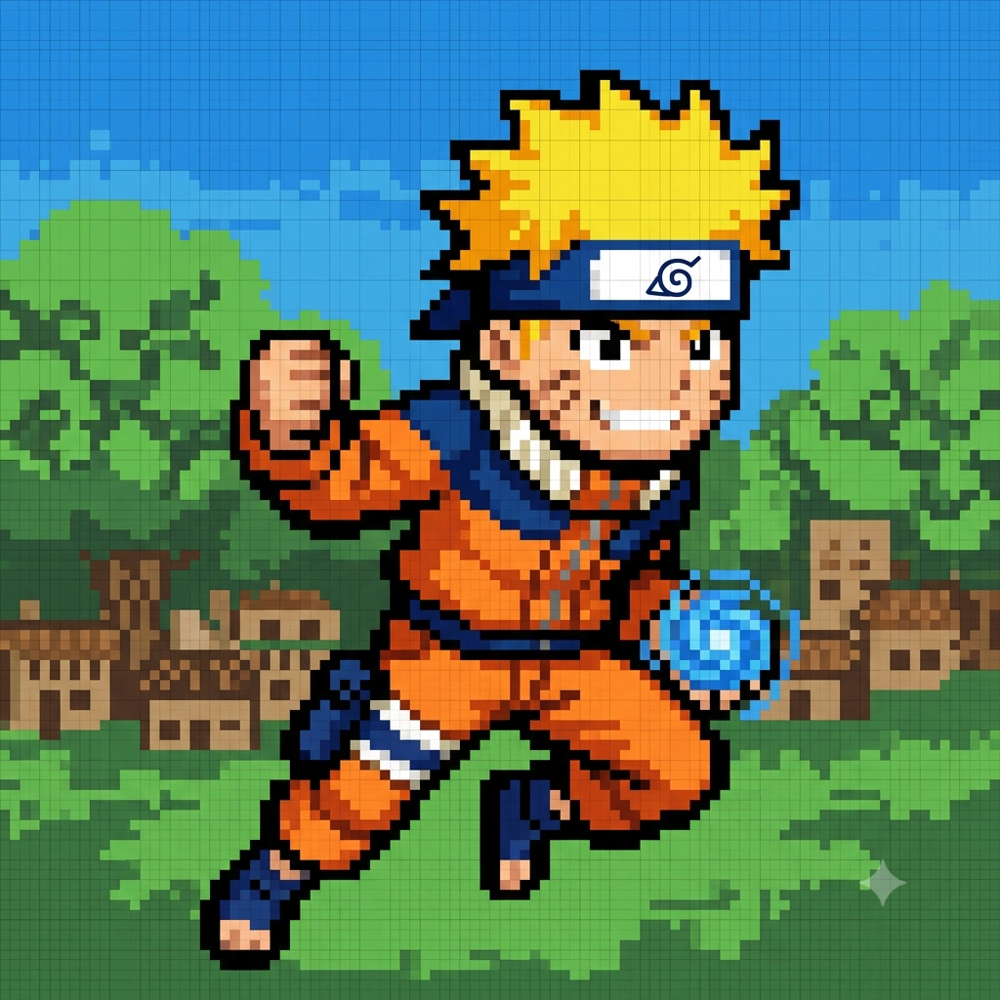

Quem é naruto uzumaki
Por: Leonardo Tavares
O garoto orfão que carregava a Raposa de Nove Caudas (Kurama) selada dentro de si e superou o preconceito de toda a sua vila para realizar o sonho de se tornar Hokage. Com determinação inabalável e a capacidade única de transformar inimigos em aliados, ele se tornou o maior herói do mundo ninja. Poderes: Modo Sábio, Modo Kurama, Kage Bunshin (Clones das Sombras) e Rasengan. Afiliação: Vila da Folha (Time 7 / Sétimo Hokage).